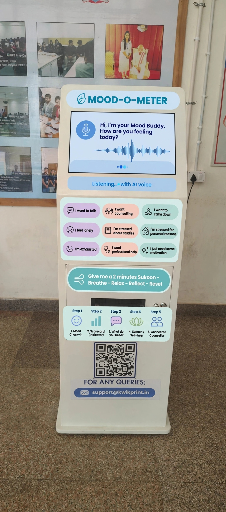
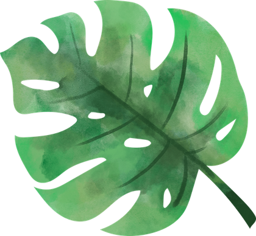

Voluntary by design
Choose whether to check in. No one should feel pressured to participate.
Campus wellness, with people at the heart
Meet MOOD'O'METER — a proposed, voluntary campus wellness kiosk that helps students find a moment of calm and a path to professional support when they need one.
AI can notice. A trained human listens, supports and helps.


The reason we’re here
Stress, anxiety and loneliness can be hard to talk about. Even when a campus has counsellors, stigma or hesitation can make that first visit feel far away. MOOD'O'METER imagines a gentle, voluntary bridge from a check-in to a real conversation.
A different kind of support system
The tool offers a starting point. A qualified professional provides care.
Choose whether to check in. No one should feel pressured to participate.
The proposal is privacy-minded. A real campus rollout must explain consent, data use and access clearly.
An indicator is not a diagnosis. Trained counsellors bring context, empathy and professional judgement.
A path with people in it
A suggested campus flow for students and faculty. Every step is an invitation, not an obligation.
Visit a voluntary kiosk in a campus block and take a moment to notice how you’re feeling.
The proposal explores an AI-supported voice and facial-expression check-in. Participation and consent should always come first.
A scorecard points toward wellness activities, self-help resources or a conversation with a counsellor—not a diagnosis.
With the student’s consent, a campus counsellor can follow up. Priority support is proposed for people who need it.
Professional support, a calming space and a follow-up appointment help make care a continuing connection.
A small moment for you
Try this tiny, private demo. Choose what feels closest; it won’t be saved or sent anywhere.
This is a reflection prompt, not an AI assessment or mental-health service.
Sukoon · a moment of calm
A gentle breathing pause inspired by the kiosk’s “Breathe · Relax · Reflect · Reset” moment. Go at your own pace; you can stop whenever you like.
Find a comfortable position. Press start when you’re ready.
If focusing on your breath feels uncomfortable, pause and choose what feels right for you.
A softer landing on campus
A proposed quiet, low-stimulation recovery room for students who need a calm moment, with appropriate volunteer or counsellor supervision nearby—not isolation.
“Silence for the mind,A concept for care, comfort and connection.
support for the heart.”
Dim, warm lighting, comfortable seating, optional soft instrumental music and breathing guides.
A volunteer or counsellor can help someone settle and connect to the next step.
Priority counselling is proposed the same day or within 24 hours, followed by an agreed follow-up.
A proposed campus plan
The presentation outlines these proposed fees. Confirm details, consent and access with the university before any real service is offered.
Ideas that informed the proposal
A low-stimulus space with comfortable seating, sensory tools, breathing guides, relaxation audio and yoga mats.
A quiet, low-stimulation environment for stress reduction and mindfulness.
A centre for counselling and psychological wellness, including one-to-one counselling and crisis first response.
The heart of MOOD'O'METER
AI won’t replace a counsellor. It can help open a door sooner. What matters most is the care waiting on the other side.
Take a quiet moment